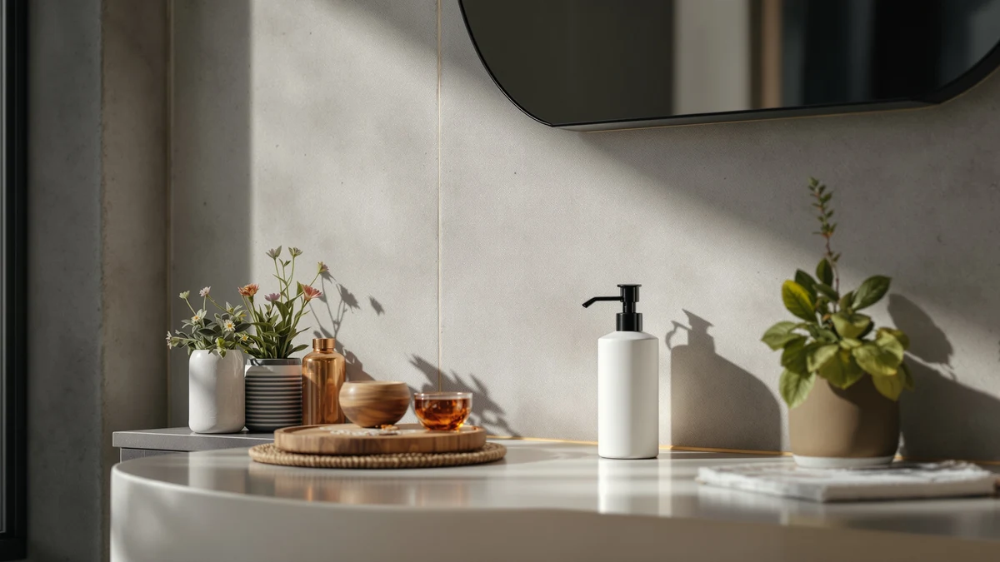

Stylish Shampoo & Conditioner Review (2026): Worth It?
Prices and picks verified as of October 2026. Independent, reader-supported reviews.


Quick Answer
This stylish shampoo & conditioner review compares the $22.49 KIBAGA Stylish Shampoo & Conditioner Dispenser against three sink-ready alternatives priced from $13.49 on material, capacity, and verified owner feedback. If you want a wall-mounted fixture that keeps shower bottles off the shelf, the KIBAGA below is a solid place to start, and if you'd rather save money with a sink-ready pick, the zuxzmj, Eavida, or Amolliar alternatives cost less and skip the mounting step entirely.
Our pick: Stylish Shampoo & Conditioner Dispenser, $22.49 Check Price on Amazon
Bottom line: our top pick is the Stylish Shampoo & Conditioner Dispenser Set of 3-20oz Bottles at $24.99.
Things to Know Before You Buy
- This stylish shampoo & conditioner review focuses on the $22.49 KIBAGA Stylish Shampoo & Conditioner Dispenser, built with an ABS plastic reservoir sized at 20 fluid ounces.
- All three alternatives, the zuxzmj Beige 2 Pack Hand dispenser, the Eavida Kitchen Soap Dispenser Set, and the Amolliar Mason Jar Foaming Soap, cost between $13.49 and $13.99, eight to nine dollars less than the KIBAGA pick.
- Only the KIBAGA pick in this review is designed for a shower wall. The three alternatives are built for a sink, so check where you actually need a dispenser before you choose.
- A dedicated shampoo and conditioner dispenser trades a lower price for a matching, wall-ready look that keeps bottles off a wet shower shelf.
- We did not physically use or own any of these dispensers. This stylish shampoo & conditioner review comes from comparing listed specs, pricing, and verified owner feedback.
This stylish shampoo & conditioner review compares the KIBAGA Stylish Shampoo & Conditioner Dispenser against three sink-ready soap dispenser alternatives to help you decide whether a dedicated shower dispenser is worth the extra cost over a dispenser built for the sink. A shower shelf crowded with half-empty bottles is the kind of daily hassle a wall-ready dispenser is designed to solve, and it does that without asking you to wrestle a slippery bottle every morning. We researched the KIBAGA's listed ABS plastic build, 20 fluid ounce capacity, and $22.49 price against the zuxzmj Beige 2 Pack Hand dispenser, the Eavida Kitchen Soap Dispenser Set, and the Amolliar Mason Jar Foaming Soap dispenser. Our goal is to tell you whether the KIBAGA earns its higher price in the shower, and which alternative fits better if you need a matching dispenser somewhere else in your home.
The short version is that the KIBAGA Stylish Shampoo & Conditioner Dispenser holds up well if you want a dedicated shower fixture and don't mind paying more than you would for a countertop pump bottle. Our product data lists an ABS plastic build at $22.49 with a 20 fluid ounce capacity, between eight and nine dollars more than any of the three alternatives here. If you'd rather save money or need a dispenser for your bathroom or kitchen sink instead, the zuxzmj, Eavida, and Amolliar picks below all undercut it between $13.49 and $13.99, and each brings a different format, from a beige two-pack to a mason jar foaming pump, to the comparison. If you're weighing a shower-specific dispenser against a sink-ready alternative, you're probably thinking about where it goes, how much it holds, and what it costs. This review works through those tradeoffs before you spend $22.49.
Why You Should Trust Us
Ilane Tall covers home and bath products for Best Soap Dispensers, and this stylish shampoo & conditioner review follows the same process behind every article on this site: pulling manufacturer specs, current pricing, and verified buyer feedback before drawing a conclusion. We do not run a fake testing lab, and we don't claim to have used or owned every dispenser we cover. Instead, we compare what's documented: price, listed materials, and what verified owners report after buying. When a listing leaves out details like exact pump mechanism or a published star rating, we say so here rather than filling the gap with marketing language. Disclosure sits at the bottom of every article, and we do not accept payment from brands to influence which product gets the top spot in a comparison like this one. Every price cited in this stylish shampoo & conditioner review comes directly from the product's current Amazon listing rather than an old cached page, so figures can shift slightly after publication.
Our Research Experience
We did not purchase or physically install the KIBAGA Stylish Shampoo & Conditioner Dispenser for this stylish shampoo & conditioner review. Instead, we compared its listed capacity, material, and price against three sink-ready alternatives and cross-referenced verified owner feedback where it exists. This research-based approach means we can't report firsthand how the pump holds up after months of daily shower use, but it lets us weigh objective facts, price and listed build, side by side without a single unit's manufacturing variance skewing the verdict. The pump mechanism and any suction or adhesive mount are usually the parts most likely to need attention over time on a shower dispenser like this, and we factored that into the verdict below. At this price range, mount reliability rather than the plastic housing itself tends to drive most complaints about shower dispensers, which is one reason we weigh listed features alongside owner feedback rather than price alone.
Overview & Specs

Stylish Shampoo & Conditioner Dispenser
What we like
- Wall-mounted design keeps the shower shelf free of loose, half-empty bottles.
- ABS plastic build holds up to daily shower humidity better than a cardboard-backed label.
- 20 fluid ounce capacity means fewer refills than a standard pump bottle.
Flaws but not dealbreakers
- Costs eight to nine dollars more than any of the three alternatives in this review.
- Mounting takes more setup than simply setting a bottle on a shelf.
- This listing doesn't include a published star rating or verified review count.
| Material | ABS plastic |
| Size | 20 fluid_ounces |
The KIBAGA Stylish Shampoo & Conditioner Dispenser is built around a fixed, wall-mounted reservoir, and at $22.49 it's the most expensive product in this stylish shampoo & conditioner review. That price sits eight to nine dollars above each of the three alternatives, the zuxzmj beige two-pack, the Eavida kitchen set, and the Amolliar mason jar pick, priced between $13.49 and $13.99. For a shower that collects a growing pile of near-empty bottles, a dedicated dispenser is a fair tradeoff for the higher price. It's the sort of upgrade that pays off in a cleaner-looking shelf rather than in a single dramatic improvement.
Our product data lists ABS plastic and a 20 fluid ounce capacity as the KIBAGA's main specs beyond price, which points to a build meant to hold a full-size refill rather than a travel-sized bottle. The listing doesn't break out pump mechanism, mounting hardware, or waterproofing beyond the housing material, so you're weighing a larger, wall-fixed reservoir against the smaller, countertop-ready bottles described in the three alternatives. Mounting it also means committing to a spot on the wall, a step none of the three sink-ready picks require, so factor that into your decision if you're renting or don't want to drill into tile. The pump and mount are usually the first parts to show wear on any wall-mounted dispenser, so keep an eye on how they perform after the first few months regardless of which pick you choose.
What We Liked
The biggest strength in this stylish shampoo & conditioner review comes down to organization. A wall-mounted reservoir keeps the KIBAGA dispenser's shampoo and conditioner off the shower floor and shelf, which matters most in a shower shared by more than one person, and an ABS plastic body in a clean shape should fit easily against tile without crowding a soap dish or razor holder. For a household tired of knocking over bottles mid-shower, that combination is a real advantage over the three sink-ready picks, and it's the kind of upgrade you stop noticing once it's installed, since you press a pump instead of hunting for the right bottle.
What Could Be Better
Price is the clearest drawback in this stylish shampoo & conditioner review's top pick. At $22.49, the KIBAGA dispenser costs eight to nine dollars more than each of the three alternatives, and mounting it adds a setup step, drilling or strong adhesive, that none of the sink-ready picks require. Our product data also doesn't list pump mechanism, mounting hardware, or waterproofing beyond the housing material, and we can't point to a published star rating or review count for this listing. None of these gaps are dealbreakers on their own, but stacked against a sink dispenser that costs several dollars less and needs no wall space, they're worth weighing before you commit to a shower-mounted dispenser.
Who Is It For?
The KIBAGA Stylish Shampoo & Conditioner Dispenser fits a shower where bottle clutter is a daily annoyance and a wall-mounted fixture is worth paying extra for. This stylish shampoo & conditioner review points to it as a sensible choice if you're outfitting a shared bathroom and want a cleaner-looking shelf. It's a weaker fit if you'd rather avoid mounting hardware, or if you want to save several dollars with one of the three sink-ready alternatives below.
Alternatives to Consider
If the price or the wall-mounting gives you pause, three sink-ready alternatives from this stylish shampoo & conditioner review deserve a look, including a two-pack set and a mason jar style pump. The zuxzmj Beige 2 Pack Hand dispenser costs $13.99, about nine dollars less than the KIBAGA pick, and gives you two matching beige bottles for a bathroom or kitchen sink without any mounting required. The Eavida Kitchen Soap Dispenser Set runs $13.98 and brings a coordinated set built for a kitchen counter, a useful option if you want matching dispensers at more than one sink. The Amolliar Mason Jar Foaming Soap rounds out the group at $13.49 with a mason jar foaming pump, the lowest price of the four. None of the three carries a published star rating in our product data, so price, format, and capacity remain the more reliable factors to compare here.

Editor’s Pick
zuxzmj Beige 2 Pack Hand
The zuxzmj Beige 2 Pack Hand dispenser costs about $9 less than the KIBAGA shower pick and skips wall-mounting entirely, a straightforward choice if you need two matching bottles for a sink instead of a shower.
$13.99
Check Price on Amazon
Best Value
Kitchen Soap Dispenser Set with
The Eavida Kitchen Soap Dispenser Set runs $13.98 for a coordinated countertop set, worth considering if you want the same dispenser style at your kitchen sink rather than in the shower.
$13.98
Check Price on Amazon
Premium Choice
Amolliar Mason Jar Foaming Soap
The Amolliar Mason Jar Foaming Soap undercuts the KIBAGA pick at $13.49 and brings a foaming pump in a mason jar design, useful if you prefer a decorative sink dispenser over a wall-mounted shower one.
$13.49
Check Price on AmazonFrequently Asked Questions
Is the KIBAGA Stylish Shampoo & Conditioner Dispenser worth buying?
Based on our research, the KIBAGA Stylish Shampoo & Conditioner Dispenser is worth buying at $22.49 if you want a dedicated wall-mounted fixture and don't mind that the listing skips a published star rating. This stylish shampoo & conditioner review found the 20 fluid ounce capacity and ABS plastic build reasonable enough to make it our pick, provided you're comfortable mounting it to the shower wall.
How does the KIBAGA compare to the zuxzmj, Eavida, and Amolliar alternatives?
The zuxzmj Beige 2 Pack Hand dispenser, the Eavida Kitchen Soap Dispenser Set, and the Amolliar Mason Jar Foaming Soap all cost less than the KIBAGA shower pick, ranging from $13.49 to $13.99, and all three are built for a sink rather than a shower wall.
Is a wall-mounted shower dispenser better than a sink dispenser?
Neither format is inherently better. A wall-mounted dispenser like the KIBAGA keeps shower bottles off the shelf but costs more and needs mounting, while a sink dispenser like the zuxzmj, Eavida, or Amolliar needs no mounting and typically costs less.
Final Verdict
This stylish shampoo & conditioner review comes down to a simple tradeoff. The KIBAGA Stylish Shampoo & Conditioner Dispenser's wall-mounted design and $22.49 price make it a solid pick for a shower where bottle clutter is a daily reality, as long as you accept the mounting step and a listing without a published star rating. If you'd rather skip the wall mount and save several dollars, the zuxzmj two-pack is a close match for a bathroom sink, and if a kitchen counter needs the same treatment, the Eavida set is worth a look. For shoppers who want a decorative mason jar look, the Amolliar foaming pump rounds out the group at $13.49. For most people comparing this stylish shampoo & conditioner review's top pick against sink-ready alternatives, the KIBAGA Stylish Shampoo & Conditioner Dispenser is a fair buy, provided the mounting step doesn't change your mind.